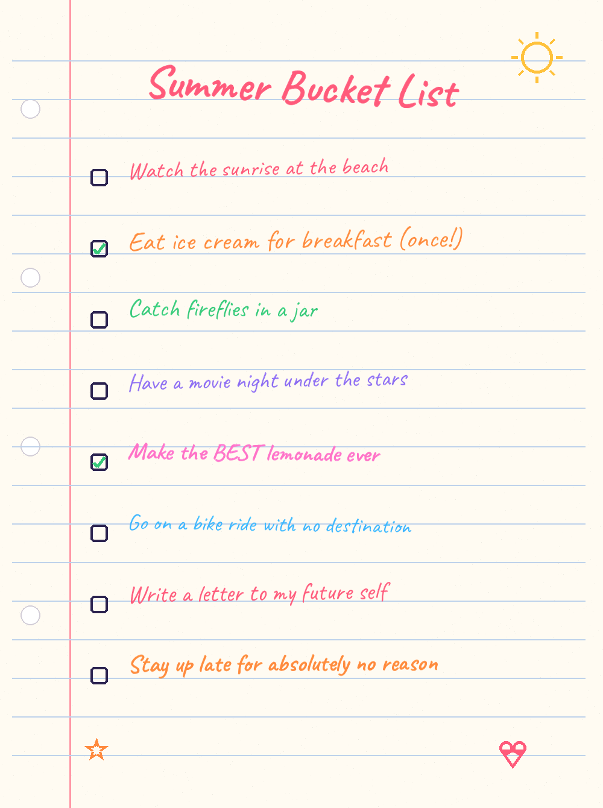

Why this exists
This started with my daughter. At the beginning of summer, she sat down and made her own bucket list — completely on her own, no prompting, just pure excitement about everything she wanted the season to hold.

Watching her do that, with so much creativity and joy, did something to me. It reminded me exactly how it felt to be a kid looking at a wide-open summer — that specific kind of excitement I'd honestly forgotten I used to feel.
So I decided I wanted in. I wanted to have a great summer too — and then I thought: why not help other people have one too? That's this. A fast, fun way for anyone to dream up a summer worth having, whatever that looks like for you.
If you make a list you're proud of, I'd genuinely love to see it — there's a link on the contact page. And if something's broken or missing, the feedback box on the homepage goes straight to a real person (me).
Have a great summer. ☀️
Make your list →